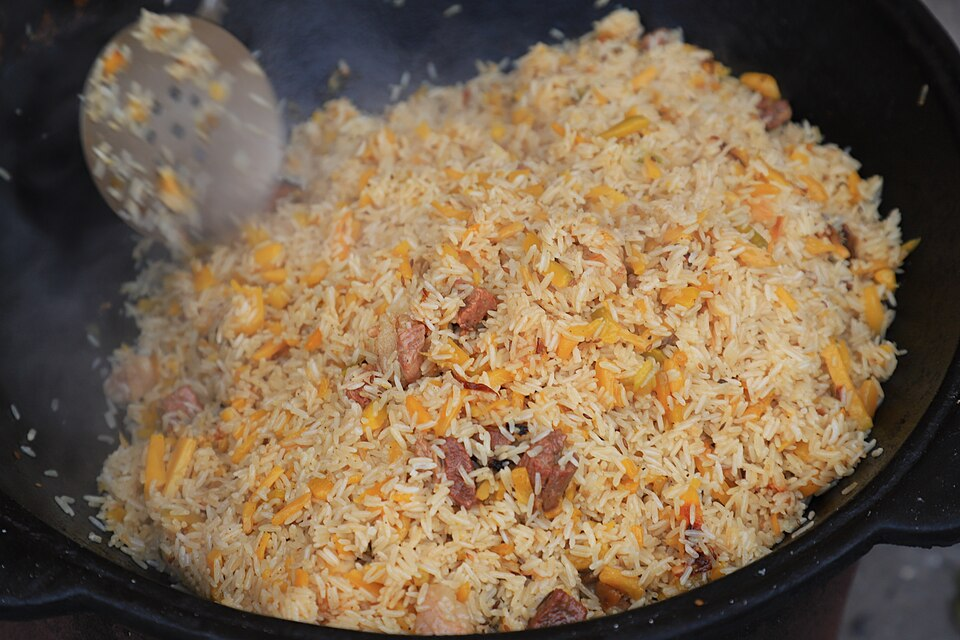

🍚 Узбекский плов
Домашняя версия по видео Сталика Ханкишиева — на плите, в кастрюле с плоским дном. Всё в граммах.

⏱ ~2,5 часа
🍽 ≈ 8 порций
🔥 плита + толстостенная кастрюля
1 · Подготовка
- Рис. Перебрать и промыть девзиру. Залить сильно солёной водой ~60 °C 3 части кипятка + 1 холодной
Замачиваем, пока готовится зирвак — главный секрет обращения с девзирой. Сливаем воду прямо перед закладкой.
- Рис басмати — бережно. Промыть 3–4 раза. Замочить максимум на 20–30 минут в тёплой воде 30–40 °C — не кипяток и не рассол! не дольше 30 минут
Слить и дать постоять ~10 минут перед закладкой. Долгий горячий замачив «сварит» басмати ещё до казана.
- Морковь — душа плова. Только нарезать соломкой ~3–5×3–5 мм (не толще), не тереть на тёрке.
Берите спелую, не слишком сочную морковь.
- Мясо и лук. Мясо нарезать кусочками (в один слой по дну кастрюли), лук — полукольцами. Мясо не мыть, обтереть.
2 · Зирвак — основа плова
- Раскалить масло в толстостенной кастрюле и перекалить. Обжарить кусочек лука до карамелизации и вынуть — масло очистилось.
- Лук полукольцами жарить до золотисто-красного цвета масло ~100 °C
- Мясо обжарить — оно должно покрывать дно в один слой.
- Засыпать морковь, добавить зиру. Жарить до мягкости моркови, аккуратно перемешивая.
- Залить кипятком! (не холодной водой) и оставить кипеть на медленном огне минимум 40 минут
- Опустить целые головки чеснока (очистить верхнюю шелуху) и целые стручки перца, посолить.
Бульон должен быть чуть пересоленным — часть соли заберёт рис.
3 · Рис и финал
- Рис промыть тёплой водой, слить и сразу шумовкой выложить ровным слоем поверх моркови, не перемешивая.
- Бульон зирвака должен полностью покрывать рис — при необходимости долить кипятка.
- Бульон должен покрывать рис всего на ~0,5–1 см — басмати впитывает меньше влаги. Кипяток доливать маленькими порциями.
- Прибавить нагрев до максимума. Если кипит только посередине — отодвинуть рис от краёв к середине и слегка придавить.
- Дождаться, когда рис будет готов и вода выкипит. Больше не мешать.
- Басмати доходит быстрее — пробовать уже через 12–15 минут после закипания. Больше не мешать.
- Собрать плов горкой, накрыть тарелкой по размеру, сверху — бумажные салфетки. Закрыть крышкой и держать на самом малом нагреве ≈ 40 минут
- Перед подачей перемешать, чеснок и перец вынуть целыми и положить сверху на горку.
💡 Советы из видео
- Настоящий девзира растёт в Ферганской долине (Узбекистан, юг Киргизии). Замоченный рис без воды трескается — сливайте воду прямо перед закладкой.
- Басмати хрупкий — разравнивать и собирать горку мягко, не «пилить». Берите выдержанный (aged) басмати, не пропаренный.
- Мясо жарьте в один слой: выложенное горкой, оно тушится, а не жарится.
- Всё заливается только кипятком — и зирвак, и долив риса.
- После закладки риса плов не перемешивают — только разравнивают слой.
- Нет целых стручков? Добавьте в зирвак с зирой молотый красный острый — 1/4–1/2 ч. л. (острота станет равномерной, лучше недосыпать) или 1 ч. л. паприки для аромата без остроты. Чёрный и душистый перец в плов не подходят.
- Лавровый лист и тимьян в классический плов не кладут: только зира, чеснок и острый перец (барбарис — по желанию).
- Чеснок и перец вынимают целыми — разламывать и выдавливать на рис принято уже в тарелке.
- К плову подают салат из тонко нарезанного лука с помидорами и горячий зелёный чай.